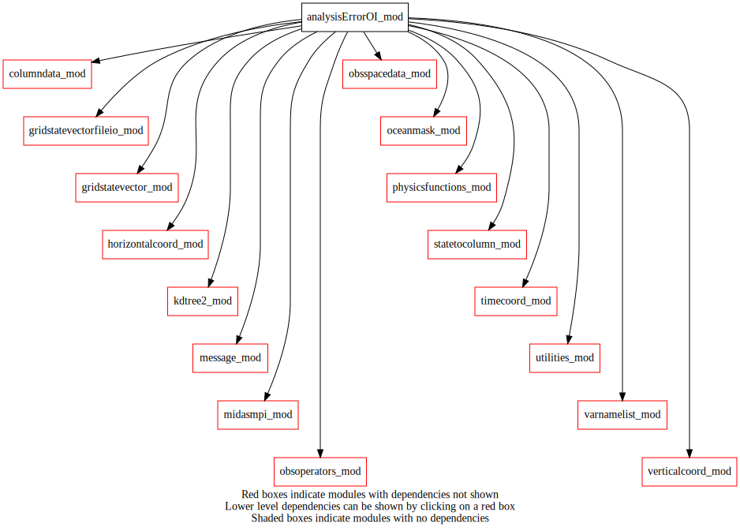
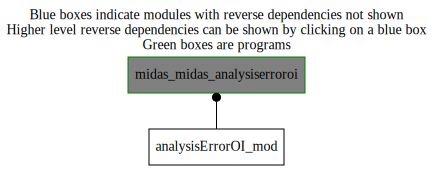

analysisErrorOI_mod¶
Dependency Diagrams:
 Direct Dependency Diagram¶
 Reverse Dependency Diagram¶
Description
MODULE analysisErrorOI_mod (prefix=’aer’ category=’1. High-level functionality’)
- Purpose
Calculate the analysis-error standard deviation. The method used is Optimal Interpolation, where it is assumed that only a subset of the total number of observations influence the analysis at a given grid point.
Quick access
- Types
- Routines
aer_analysiserror(),aer_computeanlerrorstd(),aer_dayssincelastobs(),aer_propagateanalysiserror(),aer_propagatedslo(),findobs()Needed modules
columndata_mod: MODULE columnData_mod (prefix=’col’ category=’6. High-level data objects’)
gridstatevector_mod: MODULE gridStateVector_mod (prefix=’gsv’ category=’6. High-level data objects’)
gridstatevectorfileio_mod: MODULE gridStateVectorFileIO_mod (prefix=’gio’ category=’4. Data Object transformations’)
kdtree2_mod: MODULE kdTree2_mod (prefix=’kdtree2’ category=’8. Low-level utilities and constants’)
midasmpi_mod: MODULE midasMpi_mod (prefix=’mmpi’ category=’8. Low-level utilities and constants’)
obsspacedata_mod: MODULE obsSpaceData_mod (prefix=’obs’ category=’6. High-level data objects’)
physicsfunctions_mod: MODULE physicsFunctions_mod (prefix=’phf’ category=’8. Low-level utilities and constants’)
statetocolumn_mod: MODULE stateToColumn_mod (prefix=’s2c’ category=’4. Data Object transformations’)
varnamelist_mod: MODULE varNameList_mod (prefix=’vnl’ category=’7. Low-level data objects’)
utilities_mod: MODULE utilities_mod (prefix=’utl’ category=’8. Low-level utilities and constants’)
horizontalcoord_mod: MODULE horizontalCoord_mod (prefix=’hco’ category=’7. Low-level data objects’)
verticalcoord_mod: MODULE verticalCoord_mod (prefix=’vco’ category=’7. Low-level data objects’)
obsoperators_mod: MODULE obsOperators_mod (prefix=’oop’ category=’5. Observation operators’)
message_mod: MODULE message_mod (prefix=’msg’ category=’8. Low-level utilities and constants’)
oceanmask_mod: MODULE oceanMask_mod (prefix=’ocm’ category=’7. Low-level data objects’)
timecoord_mod: MODULE timeCoord_mod (prefix=’tim’ category=’7. Low-level data objects’)Types
- type analysiserroroi_mod/struct_neighborhood¶
- Type fields
% bodyindex (*) [integer ,pointer]
% headerindex (*) [integer ,pointer]
% numobs [integer ]
% procindex (*) [integer ,pointer]
Variables
Subroutines and functions
- subroutine analysiserroroi_mod/aer_analysiserror(obsspacedata, hco_ptr, vco_ptr)¶
- Purpose
Calculate analysis-error variance.
- Arguments
obsspacedata [struct_obs ,inout] :: observation data structure
hco_ptr [struct_hco ,in,pointer] :: horizontal grid definition
vco_ptr [struct_vco ,in,pointer] :: vertical grid definition
- Called from
- Call to
utl_isnamelistpresent(),msg(),utl_abort(),gsv_varnameslist(),gsv_allocate(),gio_readfromfile(),ocm_readmaskfromfile(),aer_propagateanalysiserror(),gsv_copymask(),gsv_modifydate(),tim_getdatestamp(),gio_writetofile(),col_setvco(),col_allocate(),obs_numheader(),s2c_tl(),gsv_zero(),gsv_deallocate(),findobs(),aer_computeanlerrorstd(),col_deallocate(),aer_dayssincelastobs()
- subroutine analysiserroroi_mod/findobs(obsspacedata, statevectortrlerrorstd, numobs, variablename, lcorr, influentobs)¶
- Purpose
Find all observations used for the analysis.
- Arguments
obsspacedata [struct_obs ,in] :: observation data structure
statevectortrlerrorstd [struct_gsv ,in] :: state containing background error stddev
numobs (*,*) [integer ,out] :: number of observations found
variablename [character ,in] :: ‘GL’ for seaice or ‘TM’ for SST
lcorr (*,*) [real ,in] :: horizontal background-error correlation length scale
influentobs (*,*) [struct_neighborhood ,inout,pointer] :: details about observations to use in update
- Called from
- Call to
utl_abort(),obs_numheader(),obs_numbody(),obs_bodyelem_i(),obs_headelem_i(),obs_headelem_r(),s2c_getfootprintradius(),kdtree2_3dposition(),kdtree2_create(),s2c_getweightsandgridpointindexes(),kdtree2_r_nearest()
- subroutine analysiserroroi_mod/aer_dayssincelastobs(obsspacedata, hco_ptr, vco_ptr, inputfilename, outputfilename, variablename, propagatedslo, hourssincelastanalysis)¶
- Purpose
Update the field “days since last obs” with the newly assimilated obs.
- Arguments
obsspacedata [struct_obs ,inout] :: observation data structure
hco_ptr [struct_hco ,in,pointer] :: horizontal grid definition
vco_ptr [struct_vco ,in,pointer] :: vertical grid definition
inputfilename [character ,in] :: input file name
outputfilename [character ,in] :: output file name
variablename [character ,in] :: name of variable being treated
propagatedslo [logical ,in] :: propagate (increase) Days Since Last Obs in time
hourssincelastanalysis [integer ,in] :: number of hours between analysis times
- Called from
- Call to
gsv_allocate(),obs_numheader(),aer_propagatedslo(),gio_readfromfile(),gsv_copymask(),col_setvco(),col_allocate(),s2c_tl(),gsv_getnumlev(),vnl_varlevelfromvarname(),obs_headelem_i(),obs_bodyelem_i(),s2c_getweightsandgridpointindexes(),gio_writetofile(),col_deallocate(),gsv_deallocate()
- subroutine analysiserroroi_mod/aer_propagateanalysiserror(statevectorerrorstd, oceanmask, variablename, analysisetiket, errorgrowth, hco_ptr, vco_ptr)¶
- Purpose
read analysis error standard deviation field and propagate it forward in time
- Arguments
statevectorerrorstd [struct_gsv ,inout] :: Input: analysis std error; Output: background std error.
oceanmask [struct_ocm ,in] :: ocean-land mask (1=water, 0=land)
variablename [character ,in] :: variable name
analysisetiket [character ,in] :: analysis etiket in the input std file
errorgrowth [real ,in] :: seaice: fraction of ice per hour, SST: estimated growth
hco_ptr [struct_hco ,in,pointer] :: horizontal coordinates structure, pointer
vco_ptr [struct_vco ,in,pointer] :: vertical coordinates structure, pointer
- Called from
- Call to
- subroutine analysiserroroi_mod/aer_propagatedslo(statevectorerrorstd, inputfilename, outputfilename, hourssincelastanalysis, hco_ptr)¶
- Purpose
propagate the field “days since last obs” in time.
- Arguments
statevectorerrorstd [struct_gsv ,inout] :: read “analysis” into it and increase by hoursSinceLastAnalysis
inputfilename [character ,in] :: input file name
outputfilename [character ,in] :: output file name
hourssincelastanalysis [integer ,in] :: hours since last analysis (namelist variable)
hco_ptr [struct_hco ,in,pointer] :: horizontal grid definition
- Called from
- Call to
gio_readfromfile(),gsv_modifydate(),tim_getdatestamp(),gio_writetofile()
- subroutine analysiserroroi_mod/aer_computeanlerrorstd(obsspacedata, statevectoranlerrorstd, statevectortrlerrorstd, analysisvariable, maxanalysiserrorstddev, influentobs, lcorr)¶
- Purpose
compute analysis error standard deviation for one analysis variable (grid point) at a time
- Arguments
obsspacedata [struct_obs ,in] :: obsSpaceData structure
statevectoranlerrorstd [struct_gsv ,inout] :: state vector for analysis error std deviation
statevectortrlerrorstd [struct_gsv ,in] :: state vector for background error std deviation
analysisvariable [character ,in] :: variable name (‘GL’ or ‘TM’)
maxanalysiserrorstddev [real ,in] :: maximum limit imposed on analysis error stddev
influentobs (*,*) [struct_neighborhood ,in,pointer] :: details about observations to use in update
lcorr (*,*) [real ,in] :: horizontal background-error length scale
- Called from
- Call to
msg(),utl_tmg_start(),obs_numbody(),oop_icescaling(),obs_bodyelem_r(),gsv_getnumlev(),vnl_varlevelfromvarname(),s2c_getweightsandgridpointindexes(),utl_abort(),phf_calcdistance(),utl_matinverse(),utl_tmg_stop()
{kind=link}
{kind=link}